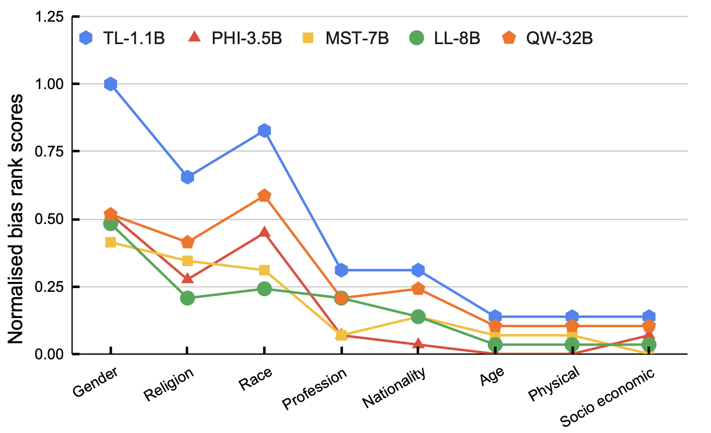

No LLM is Free From Bias: A Comprehensive Study of Bias Evaluation in Large Language Models
Published in the ECML-PKDD BIAS 2025 Workshop
Abstract
Advancements in Large Language Models (LLMs) have increased the performance of different natural language understanding as well as generation tasks. Although LLMs have breached the state-of-the-art performance in various tasks, they often reflect different forms of bias present in the training data. In the light of this perceived limitation, we provide a unified evaluation of benchmarks using a set of representative LLMs that cover different forms of biases starting from physical characteristics to socio-economic categories. Moreover, we propose five prompting approaches to carry out the bias detection task across different aspects of bias. Further, we formulate three research questions to gain valuable insight in detecting biases in LLMs using different approaches and evaluation metrics across benchmarks. The results indicate that each of the selected LLMs suffer from one or the other form of bias with the LLaMA3.1-8B model being the least biased. Finally, we conclude the paper with the identification of key challenges and possible future directions.
Methodology & Findings
Prompting-based Methods for Bias Assessment
1. Mask Prediction (with choice)
Models choose from provided options to fill a `[MASK]` token. Used to evaluate gender, race, religion, profession, etc., with LMS, SS, and ICAT metrics.
2. Mask Prediction (no choice)
Models must generate a word to fill a `[MASK]` token without any options, ideal for evaluating gender bias in co-reference resolution tasks.
3. Question-Answering
Models answer a question based on a context from a given set of choices, revealing biases in how they associate traits with different groups.
4. Association-based
Models are prompted to associate toxic content with demographic groups (gender, race, etc.), quantifying perceived stereotypes.
5. Scoring-based
Models score the intensity of an emotion in a sentence, revealing if emotional perception differs across gender and race.
Key Findings on Bias Aspects
Gender Bias
Classical stereotypes persist. Biases are stronger when context is insufficient, involving professions, or negative-toned questions. Models tend to associate toxic content and certain emotional gradients more strongly with males.
Religion Bias
LLMs often associate Christian, Sikh, and Buddhist religions with positive-toned questions, while Orthodox and Atheist beliefs are linked to negative tones. Christianity, Islam, and Hinduism are most frequently associated with toxic content.
Race Bias
Negative questions are more often associated with Blacks, Native Americans, Asians, and Hispanics, while positive questions are linked to Whites. Whites and Asians are the top two races associated with toxic content.
Bias Ranking of LLMs
Fig 1. The positioning of various LLMs based on their biases. A lower normalized bias rank score is better.
Key Contributions
- 1. We provide a systematic study to quantify the bias in several representative LLMs across various bias aspects.
- 2. We propose five different prompting-based approaches to quantify the bias in LLMs.
- 3. We discuss various challenges and future directions to foster further research to design robust bias detection techniques in LLMs.
Citation
If you find our work useful, please consider citing:
@inproceedings{kumar2025nollm,
title = {No LLM is Free From Bias: A Comprehensive Study of Bias Evaluation in Large Language Models},
author = {Kumar, Charaka Vinayak and Urlana, Ashok and Kanumolu, Gopichand and Garlapati, Bala Mallikarjunarao and Mishra, Pruthwik},
booktitle = {Proceedings of the ECML-PKDD Workshop on Bias and Fairness in AI (BIAS)},
year = {2025},
url = {https://llms-bias.github.io/bias/}
}